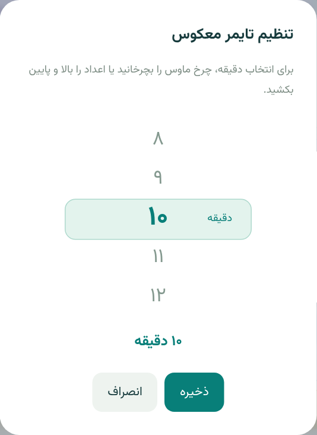
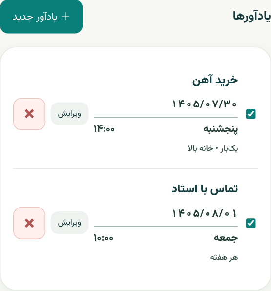
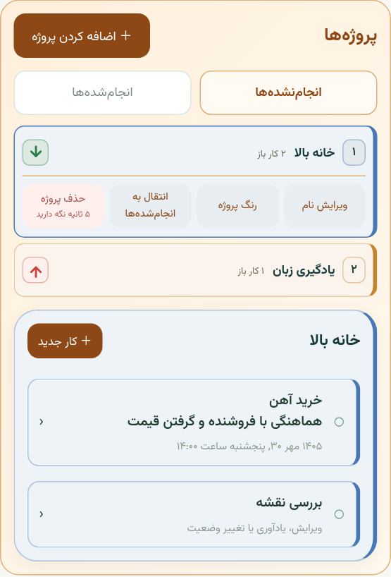
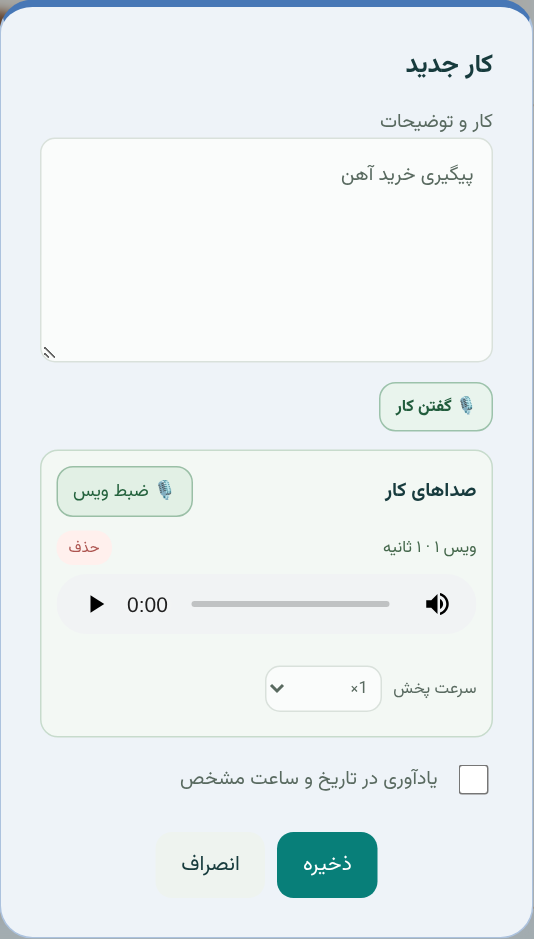
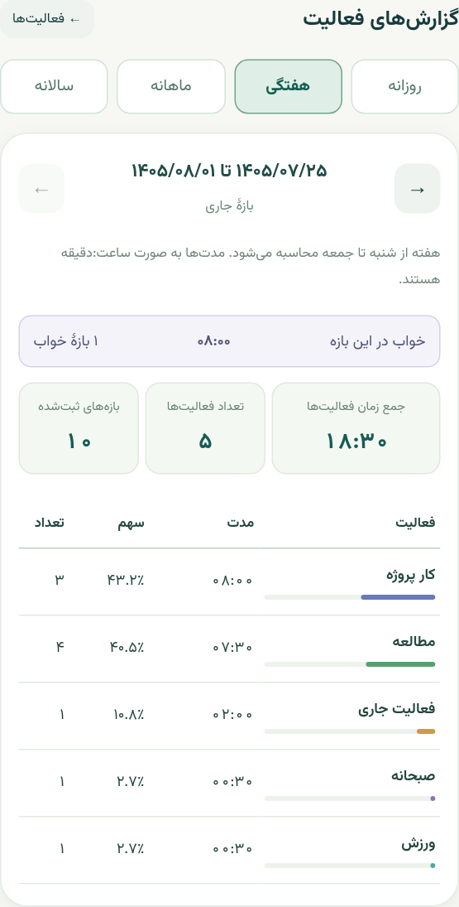
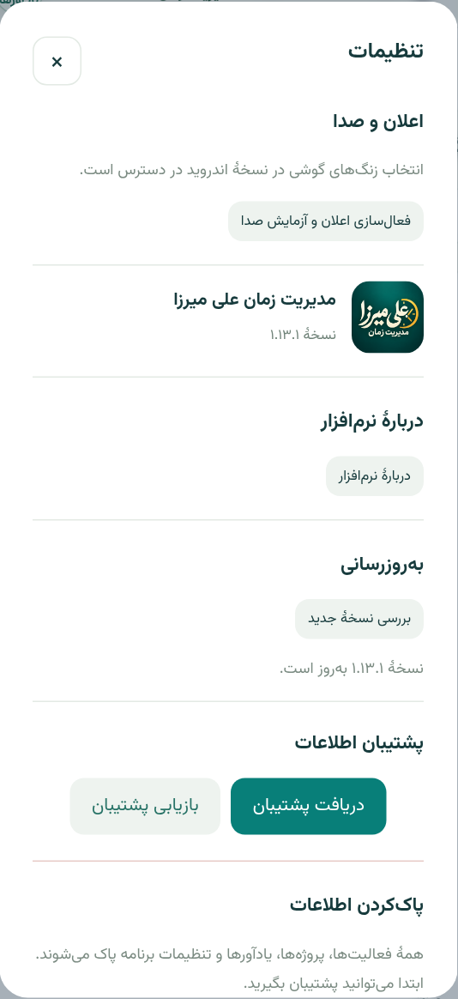
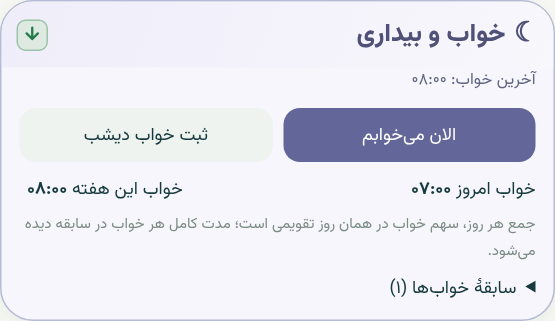

مدیریت زمان علی میرزا
از شروع روز تا گزارش فعالیتها؛ آموزش قدمبهقدم با نمونهٔ واقعی برنامه
مدیریت زمان
علی میرزا
روزتان را ثبت کنید، موعد کارها را به خاطر بسپارید و ببینید زمانتان کجا صرف شده است.
۱. شروع و ثبت روز
۲. ثبت دستی و نیمهشب
۳. ساعتهای ثبتشده و نمودار
۴. تایمر و یادآورها
۵. پروژهها و کارها
۶. فعالیتها و گزارشها
۷. تنظیمات و پشتیبان
۸. آپدیت و دربارهٔ برنامه
۹. پاسخ پرسشها
شروع روز و ثبت فعالیت
برنامه با صفحهٔ «امروز» باز میشود. ساعت دستگاه در سربرگ است و ساعت، دقیقه و ثانیهٔ فعالیت جاری در نمایشگر جداگانه دیده میشوند.
ثبت یک فعالیت
«الان بیدار شدم» را بزنید تا شمارش شروع شود. پس از پایان کار، «تا الان چه کار میکردم؟» را بزنید، نام کار را وارد کنید و ذخیره کنید.
پس از ذخیره، زمان فعالیت بعدی شروع میشود. وقتی نام یک کار را فراموش کردهاید، از پیشنهادهای فرم کمک بگیرید.
میانبرها و لوگو
تایمر، آموزش، یادآورها و تنظیمات در صفحهٔ «امروز» در دسترساند. برای دیدن دوبارهٔ انیمیشن، لوگوی برگدار را لمس کنید.
ثبت زمان گذشته و شروع دوبارهٔ روز
برای بازهای که از قبل تمام شده، از «ثبت زمان گذشته» در صفحهٔ امروز استفاده کنید.
ثبت زمان گذشته
بازهٔ زمانی یا مدت را مطابق گزینههای فرم وارد کنید، سپس فعالیت را مشخص کنید. بازهٔ آینده یا همپوشان قابل ثبت نیست.
ساعتهای ثبتشده و سهم فعالیتهای روز
در کارت «ساعتهای ثبتشده»، زمان شروع، زمان پایان، مدت و نام هر فعالیت را بخوانید.
جدول زمان و نمودار
فلشهای کنار عنوان برای دیدن روزهای دیگرند. دکمهٔ «امروز» به روز جاری برمیگردد.
سهم فعالیتهای روز زیر جدول است. درصد هر فعالیت سهم آن از مجموع زمان همان روز است. زمان کمتر از یک دقیقه با عبارت «زیر یک دقیقه» مشخص میشود.
تایمر معکوس و یادآورهای شمسی
برای یک بازهٔ کوتاه تایمر بگذارید؛ برای یک روز و ساعت مشخص، یادآور بسازید.
مثال: ده دقیقه دیگر خبرم کن
- در صفحهٔ امروز، زیر زمان فعالیت، «تغییر زمان» را بزنید.
- چرخ انتخاب دقیقه را بالا و پایین ببرید و ۱۰ دقیقه را ذخیره کنید.
- «شروع» را بزنید. تایمر در حال اجرا قرمز میشود؛ فقط عدد دقیقه:ثانیه، مانند ۰۹:۵۹، دیده میشود.
- «توقف» زمان را نگه میدارد؛ «ادامه» شمارش را ادامه میدهد و «ریست» مدت تنظیمشده را برمیگرداند.
- پس از پایان تایمر، «قطع زنگ» صدا را قطع میکند؛ «شروع مجدد» همان مدت را فوراً دوباره میشمارد.
مثال: فردا ساعت مشخص یادم بینداز
- در «یادآورها»، «یادآور جدید» را بزنید.
- عنوانی روشن، مانند «تماس با استاد»، بنویسید.
- سال، ماه و روز شمسی و ساعت را انتخاب کنید. روز هفته را بررسی کنید تا تاریخ اشتباه انتخاب نشود.
- تکرار را روی بدون تکرار، هر روز یا هر هفته قرار دهید و ذخیره کنید.
در کارت یادآور، تاریخ عددی مانند ۱۴۰۵/۰۷/۲۹ و روز هفته و زمان دیده میشود. کلید «ویرایش» برای تغییر موعد است؛ کلید وضعیت، یادآور را فعال یا غیرفعال میکند. ضربدر بزرگ «×» کنار هر یادآور برای حذف همان یادآور است؛ پیام حذف را پیش از تأیید بخوانید.


ساخت پروژه، کار و موعد انجام
هر پروژه یک پوشه برای کارهای مرتبط است؛ وضعیت هر کار و وضعیت خود پروژه مستقلاند. انجامنشدهها نارنجی و انجامشدهها سبز هستند؛ کلیدهای عملیات فقط با بازکردن پروژه دیده میشوند.
مثال: پروژهٔ «خانه بالا»
- در «پروژهها»، «اضافه کردن پروژه» را بزنید و نام «خانه بالا» را ثبت کنید.
- روی ردیف پروژه بزنید تا کارهایش باز شوند؛ با زدن دوباره، همهٔ زیرشاخههایش بسته میشوند.
- برای اصلاح عنوان، «ویرایش نام» روی همان پروژه را بزنید.
- «کار جدید» را بزنید؛ متن کار و توضیح چندخطی، مثلاً «خرید آهن؛ هماهنگی با فروشنده»، را وارد کنید.
- اگر موعد دارد، یادآوری را فعال کنید و تاریخ شمسی و زمان را تعیین کنید.
وقتی کار انجام شد
روی دکمهٔ کار بزنید و «انجام شد؛ انتقال به انجامشدهها» را انتخاب کنید. همان کار، زیر نام پروژه در انجامشدهها میرود؛ پروژه خودکار جابهجا نمیشود.
کار موعددارِ امروز، در بخش طوسی «لیست کارها / پروژهها» بالای «ساعتهای ثبتشده» هم دیده میشود. علامت انجامشدن را میتوانید از همانجا بزنید.
بازگرداندن کار یا کل پروژه
در «انجامشدهها» پروژه را باز کنید. برای یک کار، گزینهٔ بازگشت آن را بزنید؛ برای جابهجایی یکجای همهٔ کارها، از کلید انتقال روی ردیف پروژه استفاده کنید. زمان انجامشدن و سابقهٔ تغییر وضعیت کار قابل مشاهده است.
حذف و بازیابی پروژه
«حذف پروژه» را ۵ ثانیه نگه دارید و سپس حذف را تأیید کنید. پروژه با کارهایش در «انجامشدهها ← پروژههای حذفشده» میماند. با «بازیابی پروژه» آن را برگردانید.

ورود صوتی: در کار جدید یا ویرایش کار، «🎙 گفتن کار» را بزنید، فارسی صحبت کنید، متن را بررسی و ذخیره کنید. سرویس گفتار گوشی و گاهی اینترنت لازم است؛ میکروفن صفحهکلید هم قابل استفاده است.
ضبط و نگهداری ویس در کار پروژه
«گفتن کار» گفتار را به متن تبدیل میکند؛ «ضبط ویس» خود صدا را کنار همان کار نگه میدارد.
ضبط یک صدا
- پروژه را باز کنید و «کار جدید» را بزنید؛ برای کار قبلی، از جزئیات وارد «ویرایش کار» شوید.
- عنوان کار را بنویسید. در «صداهای کار»، «ضبط ویس» را بزنید و اجازهٔ میکروفن را تأیید کنید.
- صحبت کنید و سپس «پایان ضبط» را بزنید؛ تا آمادهشدن پخش صدا صبر کنید.
- ویس را پخش و بررسی کنید. اگر مناسب نیست، «حذف» همان ویس را بزنید. میتوانید چند صدا اضافه کنید.
- «ذخیره» را بزنید تا ویس همراه کار نگه داشته شود.
پخش و اصلاح
با بازکردن جزئیات کار، پخشکنندهٔ ویسها دیده میشود. برای حذف یا افزودن صدا وارد ویرایش شوید و ذخیره کنید. انصراف از ویرایش، صدای قبلی را حذف نمیکند؛ ویس تازهٔ ذخیرهنشده نگه داشته نمیشود.
زمان و فضای صدا
هر ضبط حداکثر پنج دقیقه است و با رفتن برنامه به پسزمینه پایان مییابد. برای حفظ صدا، پس از بازگشت آن را بررسی و کار را ذخیره کنید. میکروفن تنها هنگام ضبط لازم است؛ تبدیل گفتار به متن همچنان گزینهٔ جداگانه است.
انتقال به گوشی دیگر
از تنظیمات «دریافت پشتیبان» را بزنید. این فایل JSON متنها و ویسها را با هم دارد؛ در مقصد «بازیابی پشتیبان» را انتخاب کنید. سقف پشتیبان ۱۰۰ مگابایت است. حذف موقت پروژه، ویسها را نگه میدارد؛ پاککردن همهٔ اطلاعات پس از سه تأیید، صداها را هم پاک میکند.

مدیریت نام فعالیتها و گرفتن گزارش
از نامهای یکسان استفاده کنید تا زمانهای مربوط به یک کار در گزارشها درست با هم جمع شوند.
ثبت یا اصلاح نام فعالیت
- در «فعالیتهای روتین» فهرست نامهای ثبتشده را ببینید.
- «فعالیت روتین جدید» را بزنید و نامی مانند «مطالعه کتاب» بسازید.
- برای یافتن یک نام، در جستجو چند حرف آن را بنویسید.
- با «ویرایش» نام را اصلاح کنید. اصلاح نام از فهرست فعالیتها، سوابق همنام را هم اصلاح میکند.
بایگانی فعالیتها
فعالیتِ بدون دادهٔ گزارش را میتوانید حذف کنید. فعالیتِ دارای سابقه را بایگانی کنید و در «بایگانی فعالیتها» ببینید یا برگردانید. گزارشهای آن باقی میمانند.
مثال: این هفته چقدر مطالعه کردم؟
- کنار «فعالیت روتین جدید»، «گزارش کلی» در صفحهٔ «امروز» را باز کنید.
- نوع دوره را «هفته» انتخاب کنید. برای یک روز، ماه یا سال، نوع همان دوره را بزنید.
- از کلیدهای دورهٔ قبل و بعد، یا بازگشت به دورهٔ جاری، استفاده کنید.
- نام فعالیت، مدت و درصد سهم آن را در همان دوره بخوانید؛ جمع زمان مجموع فعالیتهای آن بازه است.
دورهها چگونه محاسبه میشوند؟
روز و ساعت بر اساس زمان دستگاه است؛ هفته از شنبه شروع میشود و ماه و سال بر اساس تقویم شمسیاند. بخشی از یک فعالیت که بیرون دوره افتاده، در جمع این دوره حساب نمیشود.
مثلاً فعالیت ۲۳:۳۰ تا ۰۰:۳۰، در گزارش هر روز فقط ۳۰ دقیقه سهم دارد. دورهٔ بدون فعالیت، گزارش خالی نشان میدهد؛ زمان ساختگی اضافه نمیشود.

تنظیمات، صدای زنگ و پشتیبان
تنظیمات برنامه و اطلاعات نسخه را در بخش تنظیمات ببینید؛ پشتیبان، راه انتقال دادهها بین وب و اندروید است.
انتخاب صدا در اندروید
- «تنظیمات» را باز کنید و به بخش صداها بروید.
- برای تایمر معکوس و یادآورها میتوانید صدای جدا انتخاب کنید.
- کلید انتخاب صدا، فهرست صداهای خود گوشی را باز میکند؛ صدا را انتخاب و تأیید کنید.
- برای بررسی، «پخش» کنار صدای انتخابشده یا «آزمایش صدا» را بزنید. شدت صدا را در تنظیمات زنگِ خود گوشی نیز بررسی کنید.
انتخاب صداهای گوشی، قابلیت نسخهٔ اندروید است؛ مرورگر به فهرست زنگهای سیستم اندروید دسترسی ندارد.
دریافت پشتیبان: یک نسخه از اطلاعات خود بردارید
- در تنظیمات، بخش «پشتیبان اطلاعات» را باز کنید.
- «دریافت پشتیبان» را بزنید و فایل JSON را در محل مطمئن ذخیره کنید.
- پیش از ریست روز، تعویض گوشی یا پاککردن اطلاعات برنامه، یک پشتیبان تازه بگیرید.
بازیابی: فایل را به برنامه برگردانید
- روی دستگاه مقصد، «بازیابی پشتیبان» را بزنید.
- فایل JSON قبلی را انتخاب کنید؛ پیام جایگزینی اطلاعات را بخوانید.
- فقط اگر فایل درست است، تأیید کنید.
پاککردن همهٔ اطلاعات
در تنظیمات، «پاککردن همهٔ اطلاعات» را بزنید. سه تأییدِ جدا لازم است؛ تا تأیید سوم، چیزی پاک نمیشود و «انصراف» در هر مرحله آن را لغو میکند. این کار ثبتها، پروژهها، یادآورها و تنظیمات برنامه را پاک میکند؛ پیشتر پشتیبان بگیرید. فایل پشتیبانی که جدا ذخیره کردهاید حذف نمیشود.

بهروزرسانی و راهنما
نسخهٔ نصبشده را از تنظیماتِ صفحهٔ «امروز» بررسی کنید.
بهروزرسانی از بازار
وقتی نسخهٔ جدیدتر در بازار منتشر و اطلاعات انتشار ثبت شود، نسخههای سازگار پیام را بالای صفحهٔ «امروز» نمایش میدهند. «باز کردن بازار» صفحهٔ برنامه را در بازار باز میکند.
همچنین میتوانید از «تنظیمات ← بررسی نسخهٔ جدید» وارد صفحهٔ برنامه در بازار شوید و بهروزرسانی را از آنجا انجام دهید.
نسخهٔ دانلود مستقیم و آموزش
نسخهٔ نصبشده از لینک مستقیم، بهروزرسانی همان کانال را در تنظیمات بررسی میکند. پیشنمایش وب چرخهٔ انتشار خودش را دارد.
برای راهنمای کامل یا دریافت جزوه، در صفحهٔ «امروز» دکمهٔ «آموزش» را باز کنید.
پلانریزی روزانه و ماهانه
از تب «فعالیتهای روتین» وارد «پلانریزی روزانه» یا «پلانریزی ماهانه» شوید.
پلانریزی روزانه
از تقویم، امروز یا یکی از روزهای آینده را باز کنید. فعالیت، تعداد نوبت و دقیقهٔ هر نوبت را مشخص کنید. روزهای گذشته برای انتخاب پلان تازه بستهاند.
پلانریزی ماهانه
ماه، سال و فعالیت را انتخاب کنید. در فرم فقط امروز و روزهای آینده میآیند. تیک بالای فهرست، انتخاب همهٔ روزهای قابل برنامهریزی را روشن یا خاموش میکند.
روی نوبت یا دقیقه بزنید تا همان فیلد با کلیدهای مثبت و منفی تغییر کند. از ردیف دوم، «مثل روز قبل» در ستون چپ نوبت و دقیقه را کپی میکند.
در ستون راست، «مثل روز قبل» فقط ساعت بیدارباش را کپی میکند. چهار میانبر زیر ساعت، بیدارباش را نسبت به روز قبل ۵، ۱۰، ۱۵ یا ۳۰ دقیقه جلو میآورند.
اگر ساعت بیدارباش آن روز از قبل ثبت شده باشد، فیلد سبز روشن میشود و عبارت «از قبل تنظیم شده» زیر آن دیده میشود.
پیگیری پیشرفت
در صفحهٔ امروز، هر مربع نمایندهٔ یک نوبت است و عدد آن نشان میدهد نوبت چند دقیقه است. هر نوبتِ کاملشده سبز و تیکدار میشود.
برای دیدن پیشرفت پلان، «گزارش فعالیتهای روتین» را باز کنید. «گزارش کلی» در صفحهٔ «امروز» زمان ثبتشده را در دورهٔ انتخابشده نشان میدهد.
هفتههای باقیمانده از عمرتان
از سربرگ، «هفتههای باقیمانده از عمرتان» را باز کنید.
محاسبه و دیدن جدول
تعداد سال و تاریخ تولد شمسی را وارد کنید و «نمایش هفتهها» را بزنید.
هر خانه یک هفتهٔ کامل است. قرمز برای هفتههای گذشته و سبز برای هفتههای باقیمانده است. بالا میتوانید تعداد و درصد هر گروه را بخوانید.
پس از محاسبهٔ موفق، ورودیها روی دستگاه ذخیره میشوند و بعد از بازکردن مجدد به فرم برمیگردند.
پاسخهای کوتاه برای استفادهٔ روزمره
روی هر پرسش بزنید تا پاسخ آن باز شود. در نسخهٔ PDF همهٔ پاسخها دیده میشوند.
نام فعالیت را اشتباه نوشتم؛ دوباره ثبت کنم؟
نیازی نیست. در جدول ساعتهای ثبتشده روی نام همان فعالیت بزنید و اصلاح کنید. برای اصلاح همهٔ سوابق همنام، از فهرست فعالیتها نام را ویرایش کنید.
چرا پروژه هنوز در انجامنشدههاست، با اینکه کارش تمام شده؟
پروژه و کار مستقلاند. تمامشدن کار، فقط همان کار را به انجامشدهها میبرد. برای انتقال خود پروژه، کلید انتقال روی ردیف پروژه را بزنید.
کار انجامشده را اشتباه علامت زدم؛ چطور برگردانم؟
پروژهها ← انجامشدهها؛ پروژه را باز و روی کار بزنید، سپس بازگشت به انجامنشدهها را انتخاب کنید. برای زنگ تکبار گذشته، موعد آینده تعیین کنید.
چرا حذف پروژه با یک ضربه کار نمیکند؟
برای جلوگیری از حذف اشتباه، کلید حذف پروژه را ۵ ثانیه نگه دارید و تأیید را بخوانید.
زنگ به صدا درنیامد؛ چه چیزهایی را بررسی کنم؟
تاریخ و ساعت دستگاه، فعالبودن یادآور، مجوز اعلان و زنگ دقیق، صدای انتخابشده و بلندی صدای زنگ را بررسی کنید. در اندروید محدودیت باتری را هم ببینید؛ در وب صفحه باید باز و دستگاه فعال باشد. یک تایمر یکدقیقهای آزمایش کنید.
میخواهم امروز را از ساعت ۷:۳۰ دوباره شروع کنم.
در انتهای صفحهٔ امروز «شروع دوبارهٔ امروز از ساعت دلخواه» را بزنید، علامت ساعت را بزنید و ساعت و دقیقه را جداگانه بچرخانید تا ۰۷:۳۰ انتخاب شود؛ سپس پاکشدن ثبتهای امروز را تأیید کنید. «همین الان» شروع از لحظهٔ تأیید است. ساعت آینده پذیرفته نمیشود.
اطلاعات وب را در اندروید نمیبینم.
این دو محل ذخیره جدا هستند. در وب پشتیبان JSON بگیرید و همان فایل را در تنظیمات نسخهٔ اندروید بازیابی کنید. بازیابی اطلاعات فعلی مقصد را جایگزین میکند.
مدت «۰۱:۳۰» و درصد «۲۵٪» چه تفاوتی دارند؟
۰۱:۳۰ یعنی یک ساعت و سی دقیقه. ۲۵٪ یعنی سهم آن فعالیت از جمع زمان محاسبهشدهٔ همان روز یا دوره؛ درصد مدت مستقل دیگری نیست.
خواب و بیداری
خواب دیشب را بعداً ثبت کنید یا ساعت خوابیدن و بیدارشدن را همان لحظه نگه دارید.
ثبت خواب دیشب
- در امروز، بخش «خواب و بیداری» را باز و «ثبت خواب دیشب» را بزنید.
- تاریخ شمسی و ساعت خوابیدن و بیدارشدن را جدا انتخاب کنید؛ ساعت و دقیقه با گردونهٔ ۲۴ساعته تغییر میکنند.
- اگر همین الان بیدار شدهاید، «بیدارشدن همین الان» را بزنید. مدت خواب خودکار نمایش داده میشود.
- در صورت نیاز «شروع ثبت روز از زمان بیداری» را روشن نگه دارید؛ این گزینه فقط برای امروز و وقتی فعالیت جاری ندارید کار میکند. برای ثبت خواب روزهای قبل آن را خاموش کنید.
ثبت در لحظه
«الان میخوابم» را بزنید. اگر فعالیت جاری دارید، نام آخرین کار را ثبت کنید تا پایان فعالیت و شروع خواب در یک مرز زمانی ثبت شوند. انصراف هیچ زمانی را تغییر نمیدهد. پس از بیدارشدن «الان بیدار شدم» را بزنید و زمانها را تأیید کنید. خواب در هنگام بستهبودن برنامه هم از زمان شروع ذخیرهشده محاسبه میشود.
ویرایش و گزارش
در «سابقهٔ خوابها» زمان کامل هر خواب و گزینههای ویرایش و حذف وجود دارند. خواب با خواب دیگر، فعالیت ثبتشده یا فعالیت جاری نباید تداخل داشته باشد؛ اگر اشتباه ثبت شده، ابتدا همان بازه را اصلاح کنید. هنگام خواب نمیتوان ثبت فعالیت جاری را شروع کرد.
«آخرین خواب» مدت کامل خواب را نشان میدهد؛ جمع روزانه سهم آن در همان روز تقویمی است. مثلاً خواب ۲۳:۳۰ دیشب تا ۰۷:۰۰ امروز، در سابقه ۰۷:۳۰ است و سهم امروز ۰۷:۰۰. تغییر ساعت تابستانی و زمستانی بر اساس منطقهٔ زمانی دستگاه محاسبه میشود.
در گزارشهای روزانه، هفتگی، ماهانه و سالانه، خواب جدا از جمع فعالیتها نمایش داده میشود؛ درصد فعالیتها با خواب مخلوط نمیشود. پشتیبان JSON شامل خوابهای ثبتشده و خواب جاری است. ریست امروز خوابها را نگه میدارد؛ پاککردن کامل اطلاعات با سه تأیید آنها را حذف میکند.
